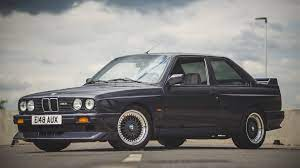

The E30 M3 used the BMW S14 four-cylinder engine, a high-revving DOHC design with a head closely based on that of the BMW S38 six-cylinder engine and the block from the BMW M10 four-cylinder engine with a 7,250 rpm redline.